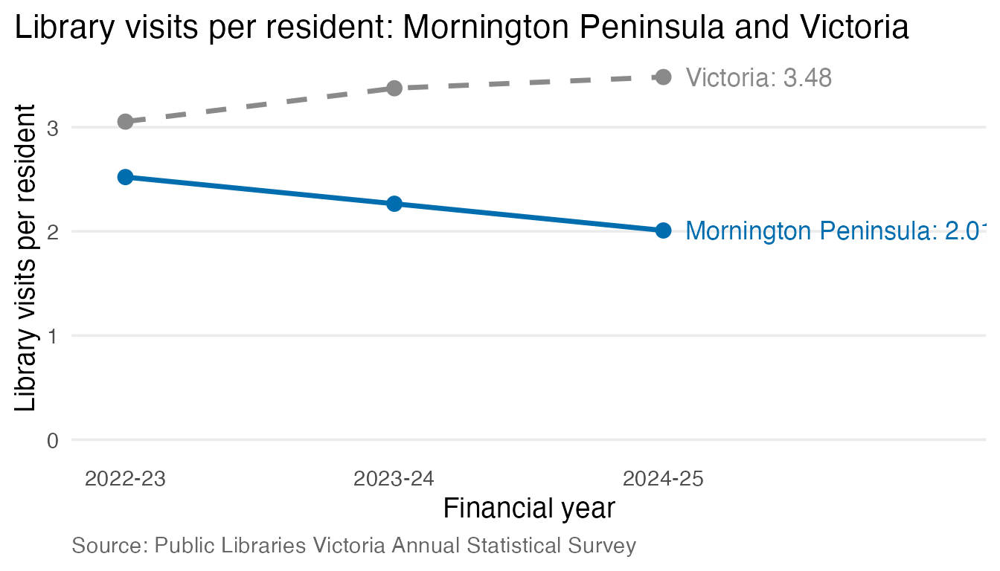

Who this package is for
This package is for council library service managers in Victoria. It helps them answer one question:
How do my service’s library visits per resident compare with the Victorian figure, and has the gap changed from 2022-23 to 2024-25?
Comparing total visits alone can be misleading because library services cover populations of different sizes. Visits per resident divide by population, making comparisons between services more useful.
Install and load the package
# install.packages("remotes")
remotes::install_github("ETC5523-2026/etc5523-assignment-4-scho0107")The data
library_visits has one row for each library service in
each financial year. The original PLV data are copyright and cannot be
redistributed, so the package only includes the calculated visits per
resident, not the raw visit counts or populations. The script
data-raw/library_visits.R downloads the original file from
PLV and calculates these summaries.
head(library_visits)
#> library_service financial_year visits_per_person reported
#> 1 Bayside 2022-23 3.587330 TRUE
#> 2 Bayside 2023-24 3.987897 TRUE
#> 3 Bayside 2024-25 4.273347 TRUE
#> 4 Boroondara 2022-23 4.680404 TRUE
#> 5 Boroondara 2023-24 5.280588 TRUE
#> 6 Boroondara 2024-25 5.462451 TRUEvic_visits has the statewide figure. This is the
benchmark each service is compared with:
vic_visits
#> financial_year visits_per_person
#> 1 2022-23 3.053267
#> 2 2023-24 3.373660
#> 3 2024-25 3.481499The Victorian figure is total Victorian visits divided by the total Victorian population. It is not the average of the 50 service rates, so a large service counts for more than a small one. These numbers match the published PLV Benchmarking Report (3.05, 3.37 and 3.48 visits per resident).
Compare one service with Victoria
compare_visits() takes the name of one library
service:
compare_visits("Mornington Peninsula")
#> # A tibble: 3 × 8
#> library_service financial_year visits_per_person vic_visits_per_person
#> <chr> <chr> <dbl> <dbl>
#> 1 Mornington Peninsula 2022-23 2.52 3.05
#> 2 Mornington Peninsula 2023-24 2.26 3.37
#> 3 Mornington Peninsula 2024-25 2.01 3.48
#> # ℹ 4 more variables: difference <dbl>, rank <int>, n_services <int>,
#> # reported <lgl>Each row is one financial year. The columns are:
-
visits_per_person: the service’s library visits per resident -
vic_visits_per_person: the Victorian figure for the same year -
difference: the service minus Victoria (negative means below the state) -
rankandn_services: the service’s position among services that reported data (1 = highest)
plot_visits() shows the same comparison as a chart:
plot_visits("Mornington Peninsula")
If you spell a service name wrong, compare_visits()
stops with a message explaining what it needs:
compare_visits("Mornington")
#> Error:
#> ! `service` must be one library service name from `library_visits$library_service`, for example "Yarra".The full list of names is in
unique(library_visits$library_service).
Launch and use the app
run_app()The app uses the data inside the package, so no separate data download is needed.
- Choose your library service in the sidebar. This changes every output in the app.
- Choose a financial year. This changes the three summary boxes, the written summary and the ranking chart.
- Read the three summary boxes: your service’s visits per resident, the Victorian figure, and your rank out of all services that reported data.
- Read “What this means”. It states how far above or below Victoria your service is, and whether the gap grew or shrank between the first and last years with data.
- Check the trend chart. The blue line is your service and the grey dashed line is Victoria. A widening gap means your service is moving away from the statewide figure.
- Check the ranking chart. Your service is the blue bar and the dashed line is Victoria. Bars to the right of the line are above the state.
How to interpret the results: an example
For Mornington Peninsula the app shows:
- Visits per resident fell from 2.52 (2022-23) to 2.01 (2024-25).
- Over the same years the Victorian figure rose from 3.05 to 3.48.
- The shortfall compared with Victoria therefore widened from about 0.5 to about 1.5 visits per resident, and its rank dropped from 32nd to 43rd.
This shows a decline in reported visits per resident for Mornington Peninsula while the Victorian rate increased. A manager could investigate local factors such as opening hours, renovations or changes in service availability, but these data alone cannot explain the cause.
When there is no data
PLV did not receive data from Indigo in 2022-23 or from Towong in 2022-23 and 2023-24. PLV used estimates for these, but this package treats them as missing because they are not reported figures:
compare_visits("Towong")
#> # A tibble: 3 × 8
#> library_service financial_year visits_per_person vic_visits_per_person
#> <chr> <chr> <dbl> <dbl>
#> 1 Towong 2022-23 NA 3.05
#> 2 Towong 2023-24 NA 3.37
#> 3 Towong 2024-25 1.91 3.48
#> # ℹ 4 more variables: difference <dbl>, rank <int>, n_services <int>,
#> # reported <lgl>In the app, choosing Towong and 2023-24 shows “No data” for the service, “Not ranked” for the rank, and a message explaining that the service did not report data for that year. The trend chart leaves those years out instead of drawing a line through estimates.
Limitations
- Visits are not people. One person who visits every week counts many times.
- Residents are not the only users. Councils with many workers, students or tourists (such as Melbourne or Yarra) can have high visits per resident because people from other areas use their libraries.
- Small populations. For library services covering small populations, a relatively small change in visits can have a larger effect on visits per resident. For example, Hindmarsh served about 5,500 residents in 2024-25. Its visits per resident fell from 3.22 in 2022-23 to 1.75 in 2024-25.
- Service changes. Cardinia Shire moved from Casey-Cardinia Libraries (now Connected Libraries) to Myli on 1 December 2022. This changed the populations served by these libraries, so comparisons involving 2022-23 for these two services should be treated with caution.
- Self-reported data. Each library service reports its own figures, and PLV notes that errors and inconsistencies are possible.
- Only three years. Earlier years were affected by COVID-19 closures, so they are not included.
Data source
Public Libraries Victoria, 2024-25 PLV Annual Statistical Survey: Final Datasets 2022-23 to 2024-25. https://www.plv.org.au/resources/earlier-reports-and-surveys. Data © Public Libraries Victoria. Only summaries calculated from the data are included in this package.
Definitions follow the PLV Library Statistics Benchmarking Report, 2022-23 to 2024-25 (November 2025).